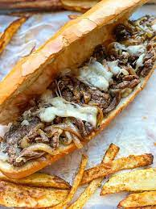

Philly Cheese Steak

Philly Cheesesteak with tender ribeye steak, melted gooey provolone, and caramelized onions
hugged by a toasted garlic butter hoagie roll. This is the classic way to make a
Philly Cheesesteak sandwich!
INGREDIENTS
- One 24-ounce boneless ribeye
- 1 tsp kosher salt
- 2 Tbsp vegetable oil
- 4 slices provolone cheese
- 2 ounces sweet and hot peppers, sliced
- 2 Tbsp ketchup
- 2 Tbsp mayonnaise
- 1 dense, chewy sandwich loaf
INSTRUCTIONS
- Salt the ribeye, and place on a wire rack in a sheet pan.
Freeze for 30 minutes, or until firm to the touch. With a
very sharp knife, slice the ribeye as thin as possible - do not
trim off fat.
- In a large cast iron skillet, heat oil over medium-high flame,
until shimmering. Add half the beef in an even layer - don’t
overcrowd the pan. Let beef fry undisturbed for 2-3 minutes, or until browned and
crispy. Flip and continue to fry, until evenly browned and crisp. Arrange the
beef in a long pile in the center of the pan, and top with cheese, reducing heat
to medium-low, until cheese has melted.
- Split loaf and dress with ketchup and mayo - top with beef and
peppers, cut in half, and serve. Repeat with remaining beef for
second sandwich.